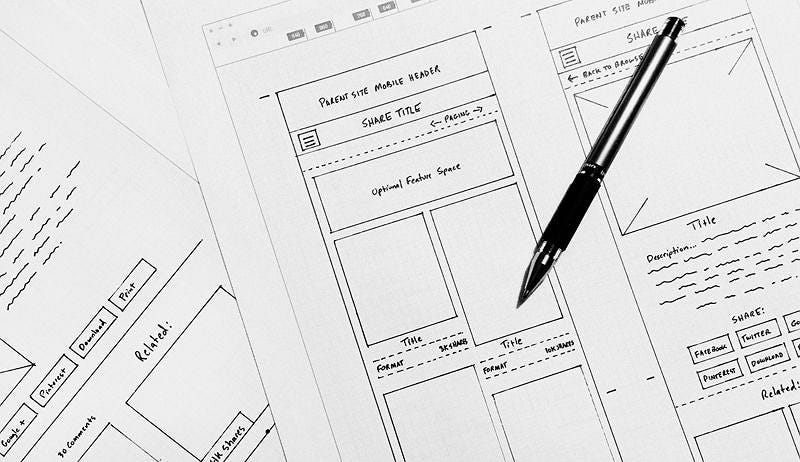
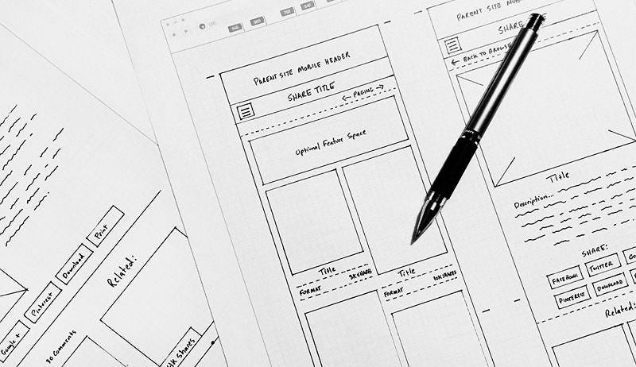

#5 DEVELOPMENT
 

In the web development cycle Development is..
the development phase is the core "building" stage where designers' plans are turned into a functional website by writing code (HTML, CSS, JavaScript) for the front-end (user interface) and back-end (servers, databases), implementing features like forms and CMS, and integrating everything into a live product,
bridging the gap between design and launch.